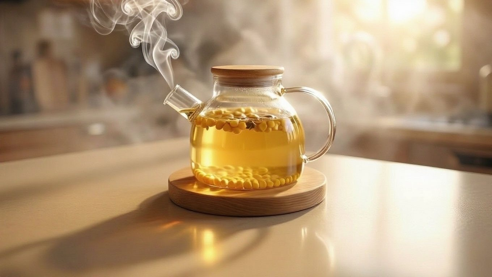
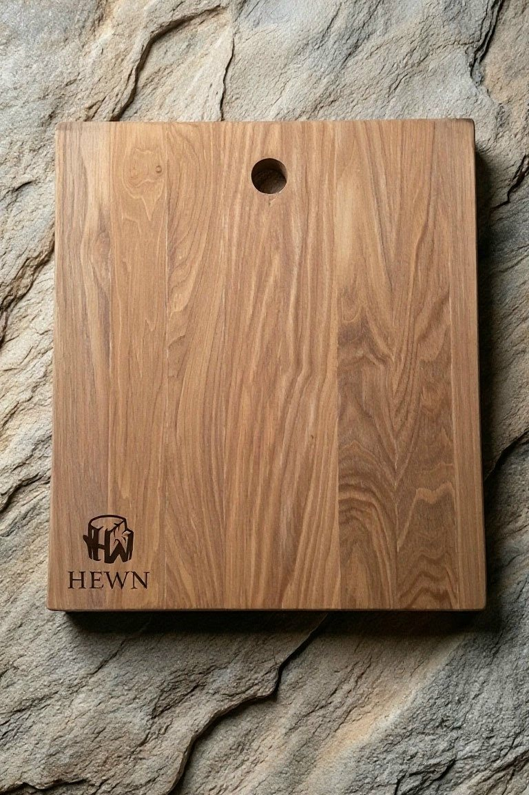

Ясень
01

Круглая · ясень
Подставка для чайника
Держит тепло, защищает стол и оставляет чайник в центре внимания.
Тихие предметы из ясеня — для медленных чаепитий и долгих разговоров на кухне.
Подставки для чайника и кухонные доски. Одна порода, две формы, никакой спешки.
Листайтеhewn /hjuːn/ — обтёсанный
HEWN — значит «обтёсанный». Это не про грубость, а про честность формы: убрать лишнее и не мешать материалу говорить.
Ясень не любит суеты. Мы тоже. Каждый предмет начинается с доски, которую хочется взять в руки, и заканчивается поверхностью, к которой хочется прикасаться.
Мы работаем небольшими партиями и только с ясенем. Так проще отвечать за то, что выходит из мастерской: за рисунок волокон, за шлифовку, за каждый слой масла.
— мастерская HEWN
02 / Коллекция
Подставки для чайника и кухонные доски. Без лишних деталей — только форма, дерево и рука.

Круглая · ясень
Держит тепло, защищает стол и оставляет чайник в центре внимания.

С ручкой · ясень
Одна доска для готовки и подачи. С клеймом мастерской и следом рук.
03 / Материал
Пока мы работаем только с ясенем. Не потому что не пробовали другое, — потому что нашли своё.
Ясень светлый и упругий, с выразительным рисунком волокон. Он одинаково хорошо держит форму подставки и тонкий край доски. Со временем дерево темнеет, проявляет глубину и становится только теплее.
Палитра
Мы не красим дерево. Только масло и воск — они проявляют тон, который уже есть внутри.
Свежий срез. Самый светлый тон породы.
#EDE4D3Тёплый оттенок, который дерево набирает со временем.
#DCC7A5Сдержанный и чуть дымный. Наш любимый.
#BBA98EГлубина, которая проявляется под маслом.
#8A745BТень дерева, а не его новая краска.
#45362704 / Процесс
Смотрим не на ценник, а на рисунок. Доска сама подсказывает, чем станет: подставкой или доской.
Обтёсываем лишнее. Форма не добавляется — она проявляется. Отсюда и имя: HEWN.
Проходим несколько зёрен, пока поверхность не станет шёлковой. На ощупь — важнее, чем на вид.
Питаем маслом с воском. Дерево остаётся деревом: дышит, темнеет, живёт вместе с вами.
05 / Уход
Ничего сложного. Ясень прощает многое, если не забывать о нём совсем.
Протирайте влажной тканью и сразу вытирайте насухо. Ясень не боится воды — он не любит, когда его оставляют в ней надолго.
Обновляйте маслом с воском: тонкий слой, тёплая ткань, немного времени. Дерево ответит глубиной цвета.
Пятна от чая, лёгкие порезы, потёртости — часть жизни. Их можно мягко отшлифовать и снова покрыть маслом.
Посудомоечная машина, прямые солнечные лучи и долгое замачивание. Всё остальное — можно.
06 / Связаться
Расскажите, какой предмет нужен и для чего. Мы ответим, предложим форму и детали — без спешки и мелкого шрифта.